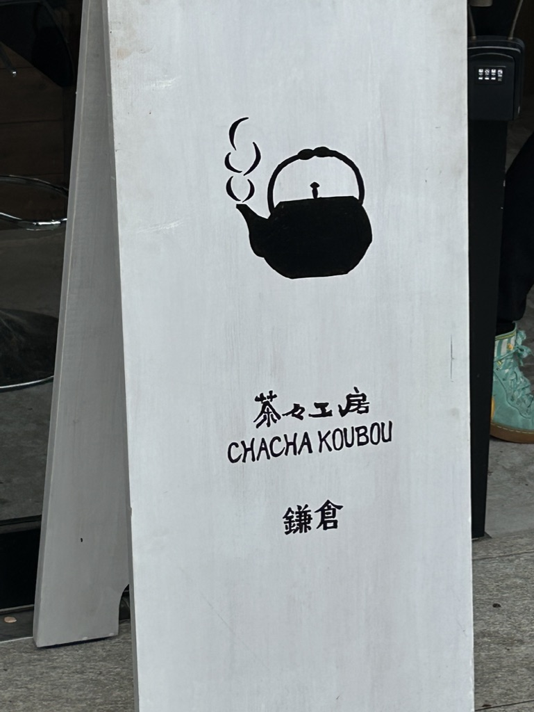
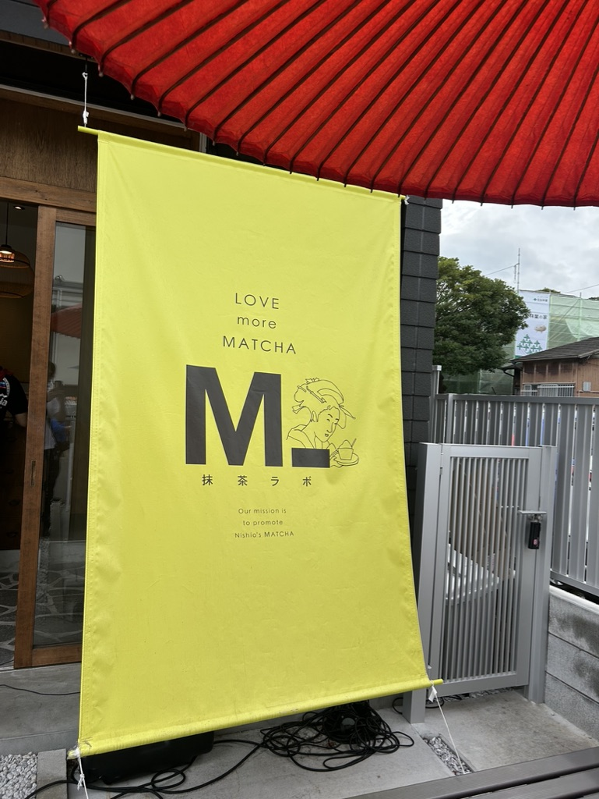
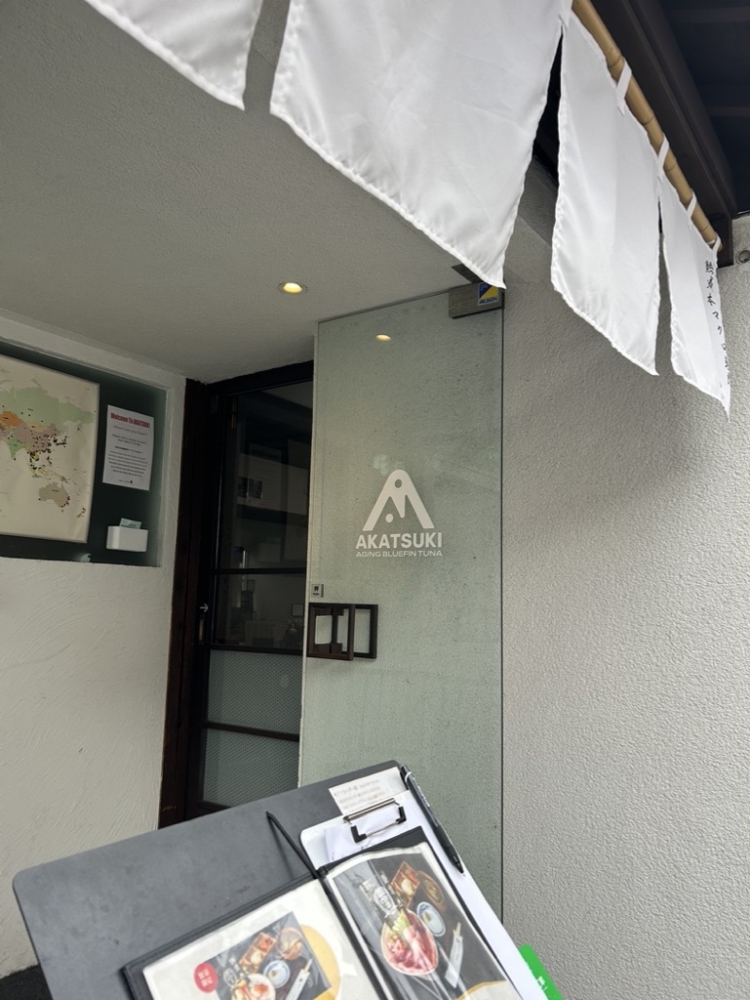

店舗の看板のデザイン
今回の課題を実施する場で観光客が多い鎌倉に行ってみました。

この画像のお店は「茶々工房」であり、和菓子を販売しています。
私がこの看板に注目した点はシンボルマークの”やかん”です。
和菓子は文字通り日本の伝統文化の菓子であり、お茶を表すヤカンにすると
外国観光客にも分かりやすいと思います。

この画像は抹茶専門店です。
看板、あるいは暖簾に英語で"matcha"とされ、イラストには日本の浮世絵などでよく見る
女性が描かれています。こうすることにより、観光客にも分かりやすく日本らしさも残す
このデザインは魅力的です。

この画像はマグロ専門店です。
看板あるいはお店のロゴをよくみていると、魚の画像になっていることがわかります。
こうすることにより外国人だけではなく日本人にも簡単にわかることができ、デザインも
料理のおいしさを醸し出しているので色々な効果があることがわかります。